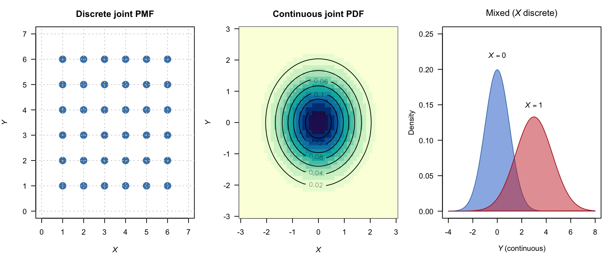
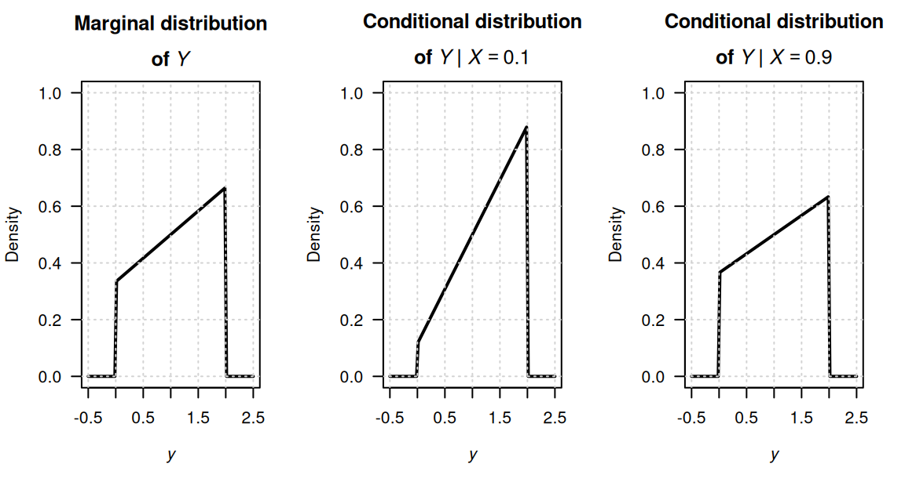
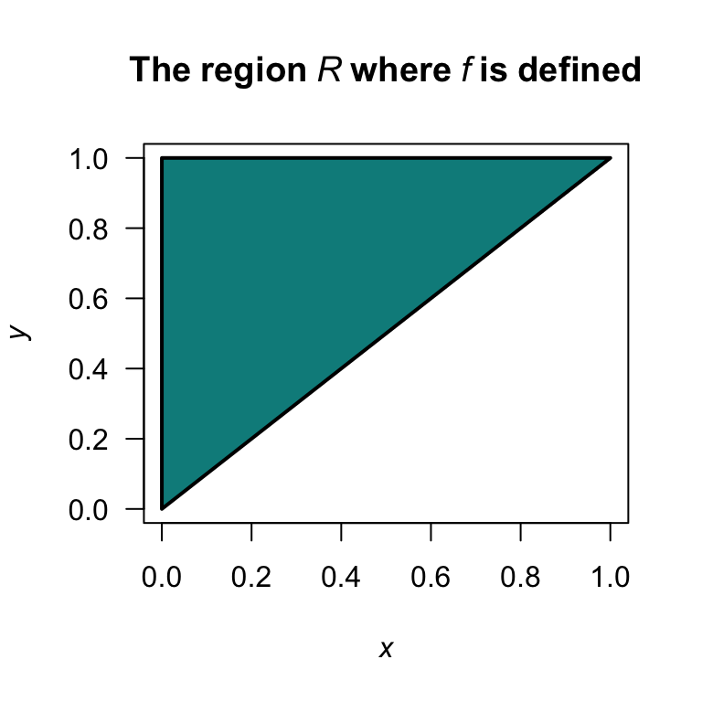
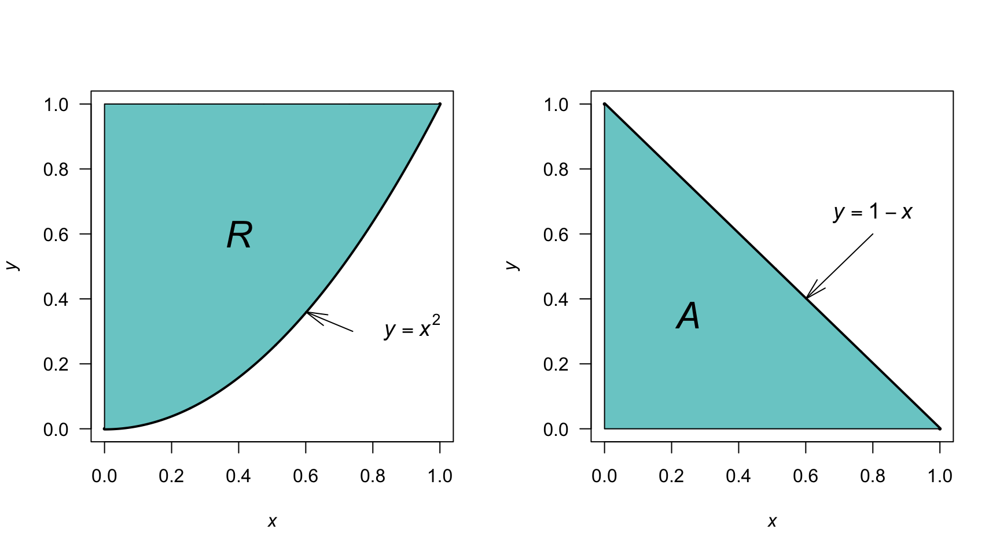

5 Bivariate distributions
Upon completion of this chapter you should be able to:
- apply the concept of bivariate random variables.
- compute joint probability functions and the distribution function of two random variables.
- find the marginal and conditional probability functions of random variables in both discrete and continuous cases.
- apply the concept of independence of two random variables.
- compute the expectation and variance of linear combinations of random variables.
- interpret and compute the covariance and the coefficient of correlation between two random variables.
- compute the conditional mean and conditional variance of a random variable for some given value of another random variable.
- use the multinomial and bivariate normal distributions.
5.1 Introduction
Not all random processes are sufficiently simple to have the outcome denoted by a single variable \(X\). Many situations require observing two or more numerical characteristics simultaneously. This chapter mainly discusses the two-variable (bivariate) case.
5.2 Bivariate random variables and their distributions
The joint probability function simultaneously describes how two random variables vary and interact. The set of all possible pairs of outcomes, the joint range (or support) of \((X, Y)\), denoted \(\mathcal{R}_{X,Y}\), is a subset of the Euclidean plane \(\mathbb{R}^2\). Each outcome \((X(s), Y(s))\) is represented as a point \((x, y)\) in this plane. As with univariate distributions, discrete and continuous random vectors must be distinguished to determine how probabilities are assigned to these points.
Definition 5.1 (Random vector) Let \(X = X(s)\) and \(Y = Y(s)\) be two functions, each assigning a real number to each sample point \(s \in S\). The pair \((X, Y)\) is called a two-dimensional random variable, or a random vector.
Example 5.1 (Bivariate discrete) Consider a random process where, simultaneously, two coins are tossed, and one die is rolled. Let \(X\) be the number of heads that show on the two coins, and \(Y\) be the number of rolls needed to roll a .
\(X\) is discrete with \(\mathcal{R}_X = \{0, 1, 2\}\). \(Y\) is discrete with a countably infinite range \(\mathcal{R}_Y = \{ 1, 2, 3, \dots\}\).
The range is \(\mathcal{R}_{X\times Y} = \{ (x, y)\mid x = 0, 1, 2; y = 1, 2, 3, \dots\}\).
As with the univariate case, the description and language for the probability function are different, depending on whether the random variables \(X\) and \(Y\) are discrete or continuous case (though the ideas remain similar). While not common, the case where one variable, say \(X\), is continuous and the other, say \(Y\), is discrete also occurs. We defer this case until Sect. 5.7.
Definition 5.2 (Discrete bivariate probability mass function) Let \((X, Y)\) be a \(2\)-dimensional random variable. The joint probability mass function (or joint PMF), denoted \(p_{X, Y}(x, y)\), assigns a probability to each pair of outcomes \((x_i, y_j)\) such that \(p_{X, Y}(x_i, y_j) = \Pr(X = x_i, Y = y_j)\). This function must satisfy: \[\begin{align} p_{X, Y}(x, y) &\geq 0 \quad \text{for all } (x, y) \in \mathcal{R}_{X,Y} \\ \sum_{(x, y)\in \mathcal{R}_{X\times Y}} p_{X, Y}(x_i, y_j) &= 1 \tag{5.1} \end{align}\] The collection of all triples \(\{(x_i, y_j, p_{X,Y}(x_i, y_j))\}\) for all \(i, j\) constitutes the joint probability distribution of \((X, Y)\).
When both \(X\) and \(Y\) are continuous, we describe their behaviour using a joint probability density function (joint PDF). Instead of a 2D “staircase,” the distribution looks like a smooth surface over the \(xy\)-plane.
Definition 5.3 (Continuous bivariate probability density function) The joint probability density function (joint PDF) function of the pair if continuous random variables \(X\) and \(Y\) is a function \(f_{X,Y}(x, y)\) such that:
- \(f_{X,Y}(x, y) \ge 0\) for all \((x, y) \in \mathbb{R}^2\), and
- The total volume under the surface is \(1\): \[ \int_{-\infty}^{\infty} \int_{-\infty}^{\infty} f_{X,Y}(x, y) \, dx \, dy = 1. \] The probability that \((X, Y)\) falls within a specific region \(A\) in the plane is the volume above that region: \[ \Pr((X, Y) \in A) = \iint_A f_{X,Y}(x, y) \, dx \, dy. \]
A mixed joint distribution occurs when one variable (say \(X\)) is discrete and the other (\(Y\)) is continuous. For example, imagine \(X\) is a treatment indicator (\(0\) for Control; \(1\) for Medication) and \(Y\) is the recovery time. Then, \(X\) has a probability mass function (PMF) and \(Y\) has a probability density function (PDF) that may be different depending on whether \(X = 0\) or \(X = 1\).
In this case, the relationship is described using a set of conditional density functions rather than a single joint PDF \(f(x,y)\), because \(X\) cannot be integrated. Instead, the total probability is still \(1\) by using a hybrid approach: \[ \sum_{x \in \mathcal{R}_X} \int_{-\infty}^{\infty} f_{Y|X}(y|x) \Pr(X = x) \, dy = 1. \]
Example 5.2 (Insurance claims) Suppose \(X\) indicates if a person has a car accident (\(X = 1\) with probability \(p\); \(X = 0\) with probability \(1 - p\)). If \(X = 1\), the claim amount \(Y\) follows a continuous distribution \[ f_{Y}(y) = \exp(-y)\quad\text{for $y > 0$}. \] The joint behaviour is described by:
- \(\Pr(X = 0, Y = 0) = 1 - p\) (a discrete point mass at \(X = 0\)); and
- \(f_{X, Y}(1, y) = p \cdot \exp(-y)\) for \(y > 0\) (a continuous “slice” along the line \(x = 1\))

FIGURE 5.1: The joint PMF (left), a joint PDF (center), and a mixed joint distribution (right).
Example 5.3 (Bivariate discrete) Suppose the joint probability mass function for \((X, Y)\) is defined as \[ p_{X, Y}(x, y) = \frac{6(x + 1)}{47(y + 1)}\quad\text{for $(x, y) \in\mathbb{Z}$, $0 \le |x + y| \le 2$.} \] The joint PMF can also be described using a table (Table 5.1) or a graph (Fig. 5.2). Then, for example, \[ \Pr( \{X = 1, Y = 0, 1\} ) = \frac{12}{47} + \frac{6}{47} + 0 = \frac{18}{47}. \]
| \(X = 0\) | \(X = 1\) | \(X = 2\) | |
|---|---|---|---|
| \(Y = 0\) | \(6/47\) | \(12/47\) | \(18/47\) |
| \(Y = 1\) | \(3/47\) | \(6/47\) | \(0\) |
| \(Y = 2\) | \(2/47\) | \(0\) | \(0\) |
FIGURE 5.2: A bivariate discrete probability function.
Example 5.4 (Bivariate uniform distribution) Consider the following continuous bivariate distribution with joint PDF \[ f_{X, Y}(x, y) = 1, \quad \text{for $0 \leq x \leq 1$ and $0 \leq y \leq 1$}. \] This is sometimes called the bivariate continuous uniform distribution (Fig. 5.3). The volume under the surface is one.
The probability \(\Pr(0 \leq x \leq \frac{1}{2}, 0 \leq y \leq \frac{1}{2})\) is the volume above the square with vertices \((0, 0), (0, 1/2), (1/2, 0), (1/2, 1/2)\). Hence the probability is \(1/4\).
FIGURE 5.3: The bivariate continuous uniform distribution.
Example 5.5 (Bivariate discrete) Consider a random process where two coins are tossed, and one die is rolled simultaneously (Example 5.1). Let \(X\) be the number of heads that show on the two coins, and \(Y\) the number on the die.
Since the toss of the coin and the roll of the die are independent, the probabilities are computed as follows: \[\begin{align*} \Pr(X = 0, Y = 1) &= \Pr(X = 0) \times \Pr(Y = 1) = \frac{1}{4}\times\frac{1}{6} = \frac{1}{24};\\ \Pr(X = 1, Y = 2) &= \Pr(X = 1) \times \Pr(Y = 2) = \frac{1}{2}\times\frac{1}{6} = \frac{1}{12}; \end{align*}\] and so on. The complete joint probability function can be displayed in a graph (often tricky), a function, or a table (Table 5.2). Here, the joint probability function could be given as the function \[ p_{X, Y}(x, y) = \begin{cases} \left(\frac{1}{12}\right) 0.5^{|x - 1|} & \text{for $(x, y)\in S$ defined earlier};\\ 0 & \text{elsewhere.} \end{cases} \]
| \(Y = 1\) | \(Y = 2\) | \(Y = 3\) | \(Y = 4\) | \(Y = 5\) | \(Y = 6\) | Total | |
|---|---|---|---|---|---|---|---|
| \(X = 0\) | \(1/24\) | \(1/24\) | \(1/24\) | \(1/24\) | \(1/24\) | \(1/24\) | \(1/4\) |
| \(X = 1\) | \(1/12\) | \(1/12\) | \(1/12\) | \(1/12\) | \(1/12\) | \(1/12\) | \(1/2\) |
| \(X = 2\) | \(1/24\) | \(1/24\) | \(1/24\) | \(1/24\) | \(1/24\) | \(1/24\) | \(1/4\) |
| Total | \(1/6\) | \(1/6\) | \(1/6\) | \(1/6\) | \(1/6\) | \(1/6\) | \(1\) |
Example 5.6 (Two dice) Consider the bivariate discrete distribution which results when two dice are thrown.
Let \(X\) be the number of times a  appears, and \(Y\) the number of times a appears.
The ranges of \(X\) and \(Y\) are \(\mathcal{R}_X = \{0, 1 ,2 \}\), \(\mathcal{R}_Y = \{0, 1, 2\}\) and the range for the random process is the Cartesian product of \(\mathcal{R}_X\) and \(\mathcal{R}_Y\), understanding that some of the resulting points may have probability zero.
The probabilities in Table 5.3 are \(\Pr(X = x, Y = y)\) for the \((x, y)\) pairs in the range.
appears, and \(Y\) the number of times a appears.
The ranges of \(X\) and \(Y\) are \(\mathcal{R}_X = \{0, 1 ,2 \}\), \(\mathcal{R}_Y = \{0, 1, 2\}\) and the range for the random process is the Cartesian product of \(\mathcal{R}_X\) and \(\mathcal{R}_Y\), understanding that some of the resulting points may have probability zero.
The probabilities in Table 5.3 are \(\Pr(X = x, Y = y)\) for the \((x, y)\) pairs in the range.
The probabilities are found by realising we really have two repetitions of a simple random process with three possible outcomes, \(\{5, 6, (\text{$5$ or $6$})^c \}\), with probabilities \(\frac{1}{6}, \frac{1}{6}, \frac{2}{3}\), the same for each repetition. (Recall: \(\overline{\text{$5$ or $6$}}\) means ‘not 5 or 6’; see Def. 2.6.) Of course the event \(X = 2, Y = 1\) cannot occur in two trials, so has probability zero.
| \(x = 1\) | \(x = 2\) | \(x = 3\) | |
|---|---|---|---|
| \(y = 0\) | \((2/3)^2\) | \(2(1/6)(2/3)\) | \((1/6)^2\) |
| \(y = 1\) | \(2(1/6)(2/3)\) | \(2(1/6)(1/6)\) | \(0\) |
| \(y = 2\) | \((1/6)^2\) | \(0\) | \(0\) |
Example 5.6 is a special case of the multinomial distribution (a generalisation of the binomial distribution), described later (Sect. 8.9).
Example 5.7 (Banks) A bank operates both an ATM and a teller. On a randomly selected day, let \(X_1\) be the proportion of time the ATM is in use (at least one customer is being served or waiting to be served), and \(X_2\) is the proportion of time the teller is busy.
The set of possible values for \(X_1\) and \(X_2\) is the rectangle \(R = \{(x_1, x_2)\mid 0 \le x_1 \le 1, 0 \le x_2 \le 1\}\). From experience, the joint PDF of \((X_1, X_2)\) is \[ f_{X_1, X_2}(x_1, x_2) = \begin{cases} c(x_1 + x_2^2) & \text{for $0\le x_1\le 1$; $0\le x_2\le 1$};\\ 0 & \text{elsewhere.} \end{cases} \]
To determine a value for \(c\), first see that if \(f_{X_1, X_2}(x_1, x_2) \ge 0\) for all \(x_1\) and \(x_2\), then \(c > 0\); and \[ \int_{-\infty}^{\infty}\!\int_{-\infty}^{\infty} f_{X_1, X_2}(x_1, x_2)\, dx_1\,dx_2 = 1. \] Hence, \[\begin{align*} \int_{-\infty}^{\infty}\!\int_{-\infty}^{\infty} f_{X_1, X_2}(x_1, x_2)\, dx_1\,dx_2 &= \int_{0}^{1}\!\!\!\int_{0}^{1} f_{X_1, X_2}(x_1, x_2)\, dx_1\,dx_2 \\ &= c \int_{x_2 = 0}^{1}\left\{\int_{x_1=0}^{1} (x_1 + x_2^2)\, dx_1\right\} dx_2\\ &= c (1/2 + 1/3) = 5c/6, \end{align*}\] and so \(c = 6/5\).
Consider the probability neither facility is busy more than half the time. Mathematically, the question is asking to find \(\Pr( 0\le X_1\le 0.5, 0\le X_2\le 0.5)\); call this event \(A\). Then, \[\begin{align*} \Pr(A) &= \int_{0}^{0.5}\,\,\, \int_{0}^{0.5} f_{X_1, X_2}(x_1, x_2)\, dx_1\, dx_2 \\ &= \frac{6}{5} \int_{0}^{0.5}\left\{\int_{0}^{0.5} x_1 + x_2^2\, dx_1\right\} dx_2 \\ &= \frac{6}{5} \int_{0}^{0.5} (1/8 + x_2^2/2) \, dx_2 = 1/10. \end{align*}\]
5.3 Joint distribution function
The (cumulative) distribution function represents a sum of probabilities, or a volume under a surface, is denoted by \(F_{X, Y}(x, y)\), and defined as follows.
Example 5.8 (Bivariate distribution function) The bivariate distribution function is \[\begin{align} F(x, y) &= \Pr(X \leq x, \, Y \leq y), & \text{for $(X,Y)$ discrete;} \tag{5.2}\\ F(x, y) &= \int_{-\infty}^y \int_{-\infty}^x f(u,v) \, du \, dv, & \text{for $(X,Y)$ continuous.} \tag{5.3} \end{align}\]
Example 5.9 (Bivariate discrete) Consider the random process in Example 5.5, where two coins are tossed, and one die is rolled (simultaneously). The probability function is given in Table 5.2.
The complete joint distribution function is given in Table 5.4, and complicated even for this simple case. As an example, the joint df at \((1, 2)\) would be computed as follows: \[\begin{align*} F_{X, Y}(1, 2) &= \displaystyle \sum_{x\le1} \, \sum_{y\le 2} p_{X, Y}(x, y)\\ &= p_{X, Y}(0, 1) + p_{X, Y}(0, 2) + p_{X, Y}(1, 1) + p_{X, Y}(1, 2) \\ &= 1/24 + 1/24 + 1/12 + 1/12 = 6/24. \end{align*}\]
| \(y \lt 1\) | \(y \le 1\) | \(y \le 2\) | \(y \le 3\) | \(y \le 4\) | \(y \le 5\) | \(y \le 6\) | |
|---|---|---|---|---|---|---|---|
| \(x\lt 0\) | 0 | 0 | 0 | 0 | 0 | 0 | 0 |
| \(x\le 0\) | 0 | \(1/24\) | \(2/24\) | \(3/24\) | \(4/24\) | \(5/24\) | \(6/24\) |
| \(x\le 1\) | 0 | \(3/24\) | \(6/24\) | \(9/24\) | \(12/24\) | \(15/24\) | \(18/24\) |
| \(x\le 2\) | 0 | \(4/24\) | \(8/24\) | \(12/24\) | \(16/24\) | \(20/24\) | \(24/24\) |
Example 5.10 (Bivariate continuous) From Example 5.7, \[\begin{align*} F_{X, Y}(x, y) &= \frac{6}{5} \int_0^{x} \int_0^{y} (t_1 + t_2^2)\, dt_2 dt_1 \\ &= \frac{6}{5} \int_0^{x} (t_1 t_2 + t_2^3/3)\Big|_{t_2 = 0}^{t_2 = y} \, dt_1 \\ &= \frac{6}{5} \int_0^{x} (t_1 y + x_2^3/3)\, dt_1 \\ &= \frac{6}{5} \left( \frac{x y}{2} + \frac{x y^3}{3}\right) \end{align*}\] for \(0 < x < 1\) and \(0 < y < 1\). So \[ F_{X, Y}(x, y) = \begin{cases} 0 & \text{if $x < 0$ or $y < 0$};\\ \frac{6}{5} \left( x y/2 + x x_2^3/3\right) & \text{if $0 \le x \le 1$ and $0 \le y \le 1$};\\ 1 & \text{if $x > 1$ and $y > 1$}. \end{cases} \]
5.4 Marginal distributions
With each two-dimensional random variable \((X, Y)\) two one-dimensional random variables, namely \(X\) and \(Y\), can be described. We can find the probability distributions of each of \(X\) and \(Y\) separately.
In the case of a discrete random vector \((X, Y)\), the event \(X = x_i\) is the union of the mutually exclusive events \[ \{X = x_i, Y = y_1\}, \{\ X = x_i, Y = y_2\}, \{X = x_i, Y = y_3\}, \dots \] Thus, \[\begin{align*} \Pr(X = x_i) &= \Pr(X = x_i, Y = y_1) + \Pr(X = x_i, Y = y_2) + \dots \\ &= \sum_jp_{X, Y}(x_i, y_j), \end{align*}\] where the notation means to sum over all values given under the summation sign. Hence, the marginal distributions can be defined when \((X, Y)\) is a discrete random vector.
Definition 5.4 (Bivariate discrete marginal distributions) Given \((X, Y)\) with joint discrete probability function \(p(x, y)\), the marginal probability functions of \(X\) and \(Y\) are, respectively \[\begin{equation} \Pr(X = x) = \sum_{y}p_{X, Y}(x, y) \quad\text{and}\quad \Pr(Y = y) = \sum_{x}p_{X, Y}(x, y). \tag{5.4} \end{equation}\]
An analogous definition exists when the random vector \((X,Y)\) is continuous.
Definition 5.5 (Bivariate continuous marginal distributions) If \((X, Y)\) has joint continuous PDF \(f(x, y)\), the marginal PDFs of \(X\) and \(Y\), denoted by \(f_X(x)\), \(f_Y(y)\) respectively, are \[ f_X(x) = \int_{-\infty}^{\infty}f(x,y) \, dy \quad\text{and}\quad f_Y(y) = \int_{-\infty}^{\infty}f(x,y) \, dx. \]
Example 5.11 (Bivariate continuous marginal distributions) The joint probability density functions of \(X\) and \(Y\) is \[ f(x, y) = \left\{ \begin{array}{ll} \frac{1}{3} (3x^2 + xy), & 0 \leq x \leq 1, \, 0 \leq y \leq 2;\\ 0 & \text{ elsewhere.} \end{array} \right. \] The marginal probability density functions for \(X\) is \[\begin{align*} f_X(x) = \int_0^2\left(x^2 + \frac{xy}{3}\right) dy &= \left.x^2y + \frac{xy^2}{6}\right|_{y = 0}^2\\ &= 2x^2 + \frac{2x}{3}\quad\text{for $0 \leq x \leq 1$}. \end{align*}\] Also, \[ f_Y(y) = \int_0^1\left(x^2 + \frac{xy}{3}\right)dx = \left.\frac{1}{3}x^3 + \frac{1}{6}x^2y\right|_{x = 0}^1. \] So \(\displaystyle f_Y(y) = \frac{1}{6}(2 + y)\), for \(0 \leq y \leq 2\).
Consider computing \(\Pr(Y < X)\); see Fig. 5.4; then \[\begin{align*} \Pr(Y < X) &= \int \!\!\int_{\substack{(x, y) \in A\\ y < x}} f(x,y) \, dx \, dy \\ &= \frac{1}{3}\int_0^1 \int_y^1(3x^2 + xy) \, dx \, dy\\ &= \frac{1}{3} \int_0^1\left. x^3 + \frac{1}{2}x^2y\right|_y^1 dy\\ &= \frac{1}{3} \int_0^1(1 + \frac{1}{2}y - \frac{3}{2}y^3) \, dy = \frac{7}{24}. \end{align*}\]
FIGURE 5.4: The region where \(Y < X\).
Example 5.12 (Bivariate discrete marginal distributions) Recall Example 5.6, where two dice are rolled. We can find the marginal distributions of \(X\) and \(Y\) (Table 5.5). The probabilities in the first row (where \(Y = 0\)), for instance, are summed and appear as the first term in the final column; this is the marginal distribution for \(Y = 0\). Similarly for the other rows.
Recalling that \(X\) is the number of times a is rolled when two dice are thrown, the distribution of \(X\) should be \(\text{Bin}(2, 1/6\)); the probabilities given in the last row of the table agree with this. That is, \[ \Pr(X = x) = \binom{2}{x}\left(\frac{1}{6}\right)^x \left(\frac{5}{6}\right)^{2 - x} \] for \(x = 0, 1, 2\). Of course, the distribution of \(Y\) is the same.
| \(x = 0\) | \(x = 1\) | \(x = 2\) | \(\Pr(Y = y)\) | |
|---|---|---|---|---|
| \(y = 0\) | \(4/9\) | \(2/9\) | \(1/36\) | \(25/36\) |
| \(y = 1\) | \(2/9\) | \(1/18\) | \(0\) | \(10/36\) |
| \(y = 2\) | \(1/36\) | \(0\) | \(0\) | \(1/36\) |
| \(\Pr(X = x)\) | \(25/36\) | \(10/36\) | \(1/36\) | \(1\) |
Example 5.13 (Bivariate discrete marginal distributions) Consider again the random process in Example 5.9. From Table 5.2, the marginal distribution for \(X\) is found simply by summing over the values for \(Y\) in the table. When \(x = 0\), \[ p_{X}(0) = \sum_{y} p_{X, Y}(0, y) = 1/24 + 1/24 + 1/24 +\dots = 6/24. \] Likewise, \[\begin{align*} p_{X}(1) &= \sum_{y} p_{X, Y}(1, y) = 6/12;\\ p_{X}(2) &= \sum_{y} p_{X, Y}(2, y) = 6/24. \end{align*}\] So the marginal distribution of \(X\) is \[ p_{X}(x) = \begin{cases} 1/4 & \text{if $x = 0$};\\ 1/2 & \text{if $x = 1$};\\ 1/4 & \text{if $x = 2$};\\ 0 & \text{otherwise}.\\ \end{cases} \] This is equivalent to adding the row probabilities in Table 5.2. In this example, the marginal distribution is easily found from the total column of Table 5.2.
5.5 Conditional distributions
Consider \((X, Y)\) with joint probability function as in Example ??, with marginal distributions of \(X\) and \(Y\) as shown in Table 5.6.
| \(x = 0\) | \(x = 1\) | \(x = 2\) | \(\Pr(Y = y)\) | |
|---|---|---|---|---|
| \(y = 0\) | \(1/36\) | \(1/6\) | \(1/4\) | \(4/9\) |
| \(y = 1\) | \(1/9\) | \(1/3\) | \(0\) | \(4/9\) |
| \(y = 2\) | \(1/9\) | \(0\) | \(0\) | \(1/9\) |
| \(\Pr(X = x)\) | \(1/4\) | \(1/2\) | \(1/4\) | \(1\) |
Suppose we want to evaluate the conditional probability \(\Pr(X = 1 \mid Y = 1)\). We use that \(\Pr(A \mid B) = \Pr(A \cap B)/\Pr(B)\). So \[ \Pr(X = 1 \mid Y = 1) = \frac{\Pr(X = 1, Y = 1)}{\Pr(Y = 1)} = \frac{1/3}{4/9} = \frac{3}{4}. \] So, for each \(x\in \mathcal{R}_X\) we could find \(\Pr(X = x, Y = 1)\) and this is then the conditional distribution of \(X\) given that \(Y = 1\).
Definition 5.6 (Bivariate discrete conditional distributions) For a discrete random vector \((X, Y)\) with probability function \(p_{X, Y}(x, y)\) the conditional probability distribution of \(X\) given \(Y = y\) is defined by \[\begin{align} p_{X \mid Y}(x \mid Y = y) &= \Pr(X = x \mid Y = y)\\ &= \frac{\Pr(X = x, Y = y)}{\Pr(Y = y)}\\ &= \frac{p_{X, Y}(x, y)}{p_Y(y)} \end{align}\] for \(x \in \mathcal{R}_X\) and provided \(p_Y(y) > 0\).
The continuous case is analogous.
Definition 5.7 (Bivariate continuous marginal distributions) If \((X, Y)\) is a continuous \(2\)-dimensional random variable with joint PDF \(f_{X, Y}(x, y)\) and respective marginal probability density functions \(f_X(x)\), \(f_Y(y)\), then the conditional probability distribution of \(X\) given \(Y = y\) is defined by \[\begin{equation} f_{X \mid Y}(x \mid Y = y) = \frac{f_{X, Y}(x, y)}{f_Y(y)} \end{equation}\] for \(x \in \mathcal{R}_X\) and provided \(f_Y(y) > 0\).
The above conditional probability density functions satisfy the requirements for a univariate PDF; that is, \(f_{X \mid Y}(x \mid y) \ge 0\) for all \(x\) and \(\int_0^\infty f_{X\mid Y}(x\mid y)\,dx = 1\).
Example 5.14 (Bivariate continuous marginal distributions) In Example 5.11, the joint PDF of \(X\) and \(Y\) considered was \[ f_{X,Y}(x,y) = \begin{cases} \frac{1}{3}(3x^2 + xy) & \text{for $0 \leq x \leq 1$ and $0 \leq y \leq 2$};\\ 0 & \text{elsewhere}. \end{cases} \] The marginal probability density functions of \(X\) and \(Y\) are \[\begin{align*} f_X(x) &= 2x^2 + \frac{2}{3}x \quad\text{for $0 \leq x \leq 1$}; \\ f_Y(y) &= \frac{1}{6}(2 + y) \quad \text{for $0 \leq y \leq 2$}. \end{align*}\] Hence, the conditional distribution of \(X \mid Y = y\) is \[ f_{X\mid Y}(x \mid Y = y) = \frac{(3x^2 + xy)/3}{(2 + y)/6} = \frac{2x(3x + y)}{2 + y} \quad\text{for $0 \leq x \leq 1$}, \] and the conditional distribution of \(Y \mid X = x\) is \[ f_{Y \mid X}(y \mid X = x) = \frac{3x + y}{2(3x + 1)}\quad\text{for $0 \leq y \leq 2$}. \] Both these conditional density functions are valid density functions (verify!).
The marginal distribution for \(Y\), and two conditional distributions of \(Y\) (given \(X = 0.1\) and \(X = 0.9\)) are shown in Fig. 5.5.

FIGURE 5.5: The marginal distribution of \(Y\) (left panel), and the conditional distribution of \(Y\) for \(X = 0\) (centre panel) and \(X = 1\) (right panel).
To interpret the conditional distribution, for example \(f_{X \mid Y = y}(x \mid y)\), consider slicing through the surface \(f_{X, Y}(x, y)\) with the plane \(y = 0.5\) say (as shown in Fig. 5.6). The intersection of the plane with the surface is proportional to a \(1\)-dimensional PDF. This is \(f_{X, Y}(x, c)\), which will not, in general, be a density function since the area under this curve will be \(f_Y(c)\). Dividing by the constant \(f_Y(c)\) ensures the area under \(\displaystyle\frac{f_{X,Y}(x,c)}{f_Y(c)}\) is one. This is a one-dimensional PDF, of \(X\) given \(Y = c\); that is \(f_{X \mid Y = c}(x\mid c)\).
FIGURE 5.6: Joint PDF.
Example 5.15 (Bivariate discrete conditional distributions) Consider again the random process in Example 5.5. The conditional distribution for \(Y\) given \(X = 0\) can be found from Table 5.6. First, \(p_{X}(x)\), is needed, which was found in Example 5.13. Then, \[\begin{align*} p_{Y\mid X}(y\mid X = 0) &= \frac{p_{X, Y}(0, y)}{p_{X}(0)} \\ &= \frac{p_{X, Y}(0, y)}{1/4}, \end{align*}\] from which we can deduce \[ p_{Y \mid X = 0}(y \mid X = 0) = \begin{cases} \frac{1/24}{1/4} = 1/6 & \text{for $y = 1$};\\ \frac{1/24}{1/4} = 1/6 & \text{for $y = 2$};\\ \frac{1/24}{1/4} = 1/6 & \text{for $y = 3$};\\ \frac{1/24}{1/4} = 1/6 & \text{for $y = 4$};\\ \frac{1/24}{1/4} = 1/6 & \text{for $y = 5$};\\ \frac{1/24}{1/4} = 1/6 & \text{for $y = 6$}.\\ \end{cases} \] The conditional distribution \(p_{Y\mid X = x}(y\mid x)\) is a probability function for \(Y\) (verify!). Since \(Y\) was the number of the top face of the die, this is exactly as we should expect.
5.6 Independent random variables
Recall that events \(A\) and \(B\) are independent if, and only if, \[ \Pr(A \cap B) = \Pr(A)\Pr(B). \] An analogous definition applies for random variables.
Definition 5.8 (Independent random variables) The random variables \(X\) and \(Y\) with joint distribution function \(F_{X, Y}\) and marginal distribution functions \(F_X\) and \(F_Y\) are independent if, and only if, \[\begin{equation} F_{X, Y}(x, y) = F_X(x) \times F_Y(y) \end{equation}\] for all \(x\) and \(y\).
If \(X\) and \(Y\) are not independent they are dependent, or not independent.
The following theorem is often used to establish independence or dependence of random variables. The proof is omitted.
Theorem 5.1 The discrete random variables \(X\) and \(Y\) with joint probability function \(p_{X, Y}(x, y)\) and marginal distributions \(p_X(x)\) and \(p_Y(y)\) are independent if, and only if, \[\begin{equation} p_{X, Y}(x, y) = p_X(x) \times p_Y(y) \text{ for every }(x, y) \in \mathcal{R}_{X \times Y}. \tag{5.5} \end{equation}\] The continuous random variables \((X, Y)\) with joint PDF \(f_{X, Y}\) and marginal PDFs \(f_X\) and \(f_Y\) are independent if, and only if, \[\begin{equation} f_{X, Y}(x, y) = f_X(x)\times f_Y(y) \end{equation}\] for all \(x\) and \(y\).
To show independence for continuous random variables (and analogously for discrete random variables) we must show \(f_{X, Y}(x, y) = f_X(x)\times f_Y(y)\) for all pairs \((x, y)\). If \(f_{X, Y}(x, y)\neq f_X(x)\times f_Y(y)\), even for any one particular pair of \((x, y)\), then \(X\) and \(Y\) are dependent.
Example 5.16 (Bivariate discrete: Independence) The random variables \(X\) and \(Y\) have the joint probability distribution shown in Table 5.7. Summing across rows, the marginal probability function of \(Y\) is: \[ p_Y(y) = \begin{cases} 1/6 & \text{for $y = 1$};\\ 1/3 & \text{for $y = 2$};\\ 1/2 & \text{for $y = 3$}. \end{cases} \] To determine if \(X\) and \(Y\) are independent, the marginal probability function of \(X\) is also needed: \[ p_X(x) = \begin{cases} 1/5 & \text{for $x = 1$};\\ 1/5 & \text{for $x = 2$};\\ 2/5 & \text{for $x = 3$};\\ 1/5 & \text{for $x = 4$}. \end{cases} \] Clearly, Eq. (5.5) is satisfied for all pairs \((x, y)\), so \(X\) and \(Y\) are independent.
| \(x = 1\) | \(x = 2\) | \(x = 3\) | \(x = 4\) | |
|---|---|---|---|---|
| \(y = 1\) | \(1/30\) | \(1/30\) | \(2/30\) | \(1/30\) |
| \(y = 2\) | \(2/30\) | \(2/30\) | \(4/30\) | \(2/30\) |
| \(y = 3\) | \(3/30\) | \(3/30\) | \(6/30\) | \(3/30\) |
Example 5.17 (Bivariate continuous: independence) Consider the random variables \(X\) and \(Y\) with joint PDF \[ f_{X, Y}(x, y) = \begin{cases} 4xy & \text{for $0 < x < 1$ and $0 < y < 1 $}\\ 0 & \text{elsewhere}.\\ \end{cases} \] To show that \(X\) and \(Y\) are independent, the marginal distributions of \(X\) and \(Y\) are needed. Now \[ f_X(x) = \int_0^1 4xy \, dy = 2x\quad\text{for $0 < x < 1$}. \] Similarly \(f_Y(y) = 2y\) for \(0 < y < 1\). Thus we have \(f_X(x) \cdot f_Y(y) = f(x,y)\), so \(X\) and \(Y\) are independent.
Example 5.18 (Bivariate discrete: independence) Consider again the random process in Example 5.5. The marginal distribution of \(X\) was found in Example 5.13. The marginal distribution of \(Y\) is (check!) \[ p_{Y}(y) = \begin{cases} \frac{1/24}{1/4} = 1/6 & \text{for $y = 1$};\\ \frac{1/24}{1/4} = 1/6 & \text{for $y = 2$};\\ \frac{1/24}{1/4} = 1/6 & \text{for $y = 3$};\\ \frac{1/24}{1/4} = 1/6 & \text{for $y = 4$};\\ \frac{1/24}{1/4} = 1/6 & \text{for $y = 5$};\\ \frac{1/24}{1/4} = 1/6 & \text{for $y = 6$}.\\ \end{cases} \] To determine if \(X\) and \(Y\) are independent, each \(x\) and \(y\) pair must be considered. As an example, we see \[\begin{align*} p_{X}(0) \times p_{Y}(1) = 1/4 \times 1/6 = 1/24 &= p_{X, Y}(0, 1);\\ p_{X}(0) \times p_{Y}(2) = 1/4 \times 1/6 = 1/24 &= p_{X, Y}(0, 2);\\ p_{X}(1) \times p_{Y}(1) = 1/2 \times 1/6 = 1/12 &= p_{X, Y}(1, 1);\\ p_{X}(2) \times p_{Y}(1) = 1/4 \times 1/6 = 1/24 &= p_{X, Y}(2, 1). \end{align*}\] This is true for all pairs, and so \(X\) and \(Y\) are independent random variables. Independence is, however, obvious from the description of the random process (Example 5.1), and is easily seen from Table 5.2.
Example 5.19 (Bivariate continuous: independence) Consider the continuous random variables \(X\) and \(Y\) with joint PDF \[ f_{X, Y}(x, y) = \begin{cases} \frac{2}{7}(x + 2y) & \text{for $0 < x < 1$ and $1 < y < 2$};\\ 0 & \text{elsewhere.} \end{cases} \] The marginal distribution of \(X\) is \[ f_{X}(x) = \int_1^2 \frac{2}{7}(x + 2y)\,dy\\ = \frac{2}{7}(x + 3) \] for \(0 < x < 1\) (and zero elsewhere). Likewise, the marginal distribution of \(Y\) is \[ f_{Y}(y) = \frac{2}{7}(x^2/2 + 2 x y)\Big|_{x = 0}^1 = \frac{1}{7}(1 + 4y) \] for \(1 < y < 2\) (and zero elsewhere). (Both the marginal distributions must be valid density functions; verify!) Since \[ f_{X}(x) \times f_{Y}(y) = \frac{2}{49}(x + 3)(1 + 4y) \ne f_{X, Y}(x, y), \] the random variables \(X\) and \(Y\) are not independent.
The conditional distribution of \(X\) given \(Y = y\) is \[\begin{align*} f_{X \mid Y = y}(x \mid y) &= \frac{ f_{X, Y}(x, y)}{ f_{Y}(y)} \\ &= \frac{ (2/7) (x + 2y)}{ (1/7)(1 + 4y)}\\ &= \frac{ 2 (x + 2y)}{ 1 + 4y} \end{align*}\] for \(0 < x < 1\) and any given value of \(1 < y < 2\). (Again, this conditional density must be a valid probability density function.) So, for example, \[ f_{X \mid Y}(x\mid Y = 1.5) = \frac{ 2 (x + 2\times 1.5)}{ 1 + (4\times 1.5)} = \frac{2}{7}(x + 3) \] for \(0 < x < 1\) and is zero elsewhere. And, \[ f_{X\mid Y}(x \mid Y = 1) = \frac{ 2 (x + 2\times 1)}{ 1 + (4\times 1)} = \frac{2}{5}(x + 2) \] for \(0 < x < 1\) and is zero elsewhere. Since the distribution of \(X\) depends on the given value of \(Y\), \(X\) and \(Y\) are not independent.
Example 5.20 (Bivariate continuous: independence) Consider the two continuous random variables \(X\) and \(Y\) with joint probability function \[ f_{X, Y}(x, y)= \begin{cases} 2(x + y) & \text{for $0 < x < y < 1$};\\ 0 & \text{elsewhere}. \end{cases} \] A diagram of the region over which \(X\) and \(Y\) are defined is shown in Fig. 5.7. To determine if \(X\) and \(Y\) are independent, the two marginal distributions are needed. For example: \[ f_{X}(x) = 1 + 2x - 3x^2\quad\text{for $0 < x < 1$}. \] Since the distribution of \(X\) depends on the value of \(Y\), this means \(X\) and \(Y\) are not independent.

FIGURE 5.7: The region over which \(f_{X, Y}(x, y)\) is defined.
5.7 Mixed joint probability functions
So far, the bivariate distributions have included the cases of two discrete or two continuous random variables. However, it is also possible for one variable, say \(X\), to be continuous and the other, say \(Y\), to be discrete.
Definition 5.9 (Mixed bivariate probability function) Let \((X, Y)\) be a random vector where \(X\) is continuous with range \(S_X \subseteq \mathbb{R}\), and \(Y\) is discrete with range \(S_Y = \{y_1, y_2, \dots\}\). The joint density–mass function of \((X, Y)\) is defined on \[ \mathcal{R}_{X, Y} = S_X \times S_Y \] by \[ f_{X, Y}(x, y_j) = f_{X \mid Y}(x \mid y_j) \cdot p_Y(y_j), \] where:
- \(p_Y(y_j) = \Pr(Y = y_j)\) is the probability mass function of \(Y\), and
- \(f_{X \mid Y}(x \mid y_j)\) is the conditional density function of \(X\) given \(Y = y_j\).
Like all probability functions, the joint density–mass function is non-negative: \[ f_{X, Y}(x, y_j) \geq 0 \quad \text{for all $(x, y_j)\in\mathcal{R}_{X, Y}$}. \] In addition, the total probability is one: \[ \sum_{j\in S_Y} \int_{S_X} f_{X,Y}(x, y_j)\, dx = 1. \]
The probability of any event \(A \subseteq S_X\) and \(y_j \in S_Y\) is \[ \Pr(X \in A, Y = y_j) = \int_A f_{X,Y}(x, y_j)\, dx. \]
Example 5.21 (Mixed random variable) Suppose a random vector \((X, Y)\) is defined so that \(Y \in \{1, 2\}\) with \[ p_Y(1) = 0.4, \quad p_Y(2) = 0.6. \] Conditional on \(Y = 1\), the probability density function of \(X\) is \[ f_{X \mid Y}(x \mid Y = 1) = \begin{cases} 1 & 0 \le x \le 1, \\ 0 & \text{otherwise,} \end{cases} \] and conditional on \(Y = 2\), the probability density function of \(X\) is \[ f_{X \mid Y}(x \mid Y = 2) = \begin{cases} 1/2 & 0 \le x \le 2, \\ 0 & \text{otherwise.} \end{cases} \] Then the joint density–mass function is \[ f_{X, Y}(x, y) = f_{X \mid Y}(x \mid y) \cdot p_Y(y) \] or, more explicitly: \[ f_{X, Y}(x, 1) = \begin{cases} 0.4 & 0 \le x \le 1, \\ 0, & \text{otherwise;} \end{cases} \quad f_{X, Y}(x, 2) = \begin{cases} 0.3 & 0 \le x \le 2, \\ 0 & \text{otherwise.} \end{cases} \] Notice that \[ \sum_{y \in \{1,2\}} \int_{-\infty}^{\infty} f_{X,Y}(x,y)\, dx = \int_0^1 0.4 \, dx + \int_0^2 0.3 \, dx = 0.4 + 0.6 = 1 \] as required.
Then, for instance, we can find \(\Pr(X \le 0.5, Y = 2)\): \[ \Pr(X \le 0.5, Y = 2) = \int_0^{0.5} f_{X, Y}(x, 2)\, dx = \int_0^{0.5} 0.3\, dx = 0.15. \]
5.9 Exercises
Selected answers appear in Sect. ??.
Exercise 5.1 The discrete random variables \(X\) and \(Y\) have the joint probability function shown in Table 5.8.
- Determine \(\Pr(X = 1, Y = 2)\)
- Determine \(\Pr(X + Y \le 1)\).
- Compute \(\Pr(X > Y)\).
- Find the marginal probability function of \(X\).
- Find the probability function of \(Y \mid X = 1\).
| \(Y = 0\) | \(Y = 1\) | \(Y = 2\) | |
|---|---|---|---|
| \(X = 0\) | \(1/12\) | \(1/6\) | \(1/24\) |
| \(X = 1\) | \(1/4\) | \(1/4\) | \(5/24\) |
Exercise 5.2 The discrete random variables \(X\) and \(Y\) have the joint probability function shown in Table 5.9.
- Determine \(\Pr(X < 3, Y = 0)\)
- Determine \(\Pr(X + Y > 3)\).
- Compute \(\Pr(X > (Y/2) )\).
- Find the marginal probability function of \(Y\).
- Find the marginal probability function of \(X\).
- Find the probability function of \(Y \mid X = 1\).
| \(Y = 0\) | \(Y = 1\) | \(Y = 2\) | \(Y = 3\) | \(Y = 4\) | |
|---|---|---|---|---|---|
| \(X = 1\) | \(0\) | \(2/15\) | \(1/15\) | \(1/15\) | \(0\) |
| \(X = 2\) | \(0\) | \(2/15\) | \(1/15\) | \(1/15\) | \(1/15\) |
| \(X = 3\) | \(1/15\) | \(2/15\) | \(2/15\) | \(1/15\) | \(0\) |
Exercise 5.3 The continuous random variables \(X\) and \(Y\) have the joint probability function \[ f_{X, Y}(x, y) = k\,(x + y^2) \] for \(0 < x < 1\) and \(0 < y < 2\).
- Determine the value of \(k\).
- Compute \(\Pr(X > 1/2, Y > 1)\).
- Compute \(\Pr(X + Y > 1)\).
- Find the marginal probability function of \(X\).
- Find the marginal probability function of \(Y\).
- Find the probability function of \(Y \mid X\).
- Find the probability function of \(Y \mid X = 1\).
- Find the probability function of \(X \mid Y\).
- Find the probability function of \(X \mid Y = 1\).
- Are \(X\) and \(Y\) independent random variables? Explain.
Exercise 5.4 The continuous random variables \(X\) and \(Y\) have the joint probability function \[ f_{X, Y}(x, y) = k\,(2 + x - y) \] for \(1 < x < 2\) and \(-1 < y < 1\).
- Determine the value of \(k\).
- Compute \(\Pr(X > 1, Y > 0)\).
- Compute \(\Pr(X + Y \ge 1)\).
- Find the marginal probability function of \(X\).
- Find the marginal probability function of \(Y\).
- Find the probability function of \(Y \mid X\).
- Find the probability function of \(Y \mid X = 1\).
- Find the probability function of \(X \mid Y\).
- Find the probability function of \(X \mid Y = 1\).
- Are \(X\) and \(Y\) independent random variables? Explain.
Exercise 5.5 A random vector \((X, Y)\) is defined so that \[ \Pr(X = 1) = 0.2; \Pr(X = 2) = 0.3; \Pr(X = 3) = 0.5. \] Then, \[\begin{align*} f_{Y\mid X = 1}(y\mid X = 1) &= 1\quad\text{for $0 < x < 1$}; f_{Y\mid X = 2}(y\mid X = 2) &= 0.5\quad\text{for $0 < x < 2$}; f_{Y\mid X = 3}(y\mid X = 3) &= 1\quad\text{for $1 < x < 2$}. \end{align*}\]
- Determine the joint density–mass function.
- Find \(\Pr(Y > 1)\).
Exercise 5.6 A random vector \((X, Y)\) is defined so that \[ \Pr(X = -1) = 0.3; \Pr(X = 1) = 0.7. \] Then, \[\begin{align*} f_{Y\mid X = -1}(y\mid X = -1) &= 0.5\quad\text{for $-1 < x < 1$}; f_{Y\mid X = 1}(y\mid X = 1) &= 0.25\quad\text{for $-2 < x < 2$}. \end{align*}\]
- Determine the joint density–mass function.
- Find \(\Pr(Y > 1)\).
Exercise 5.7 The pair of random variables \((X, Y)\) have the joint probability function given by \[ \Pr(X = x, Y = y) = k\,|x - y| \] for \(x = 0, 1, 2\) and \(y = 1, 2, 3\).
- Find the value \(k\).
- Construct a table of probabilities for this distribution.
- Find \(\Pr(X \le 1, Y = 3)\).
- Find \(\Pr(X + Y \ge 3)\).
Exercise 5.8 For what value of \(k\) is \(f(x,y) = kxy\) (for \(0 \le x \le 1\); \(0 \le y \le 1\), a valid joint PDF?
- Then, find \(\Pr(X \le x_0, Y\le y_0)\).
- Hence evaluate \(\Pr\left(X \le (3/8), Y \le (5/8) \right)\).
Exercise 5.9 For the random vector \((X, Y)\), the conditional PDF of \(Y\) given \(X = x\) is \[ f_{Y \mid X = x}(y\mid x) = \frac{2(x + y)}{2x + 1}, \] for \(0 < y <1\). The marginal PDF of \(X\) is given by \[ g_X(x) = x + \frac{1}{2} \] for \(0 <x < 1\).
- Find \(F_Y(y \mid x)\) and hence evaluate \(\Pr(Y < 3/4 \mid X = 1/3)\).
- Find the joint PDF, \(f_{X, Y}(x, y)\), of \(X\) and \(Y\).
- Find \(\Pr(Y < X)\).
Exercise 5.10 Consider a random process where a fair coin is tossed twice. Let \(X\) be the number of heads observed in the two tosses, and \(Y\) be the number of heads on the first toss of the coin.
- Construct the table of the joint probability function for \(X\) and \(Y\).
- Determine the marginal probability function for \(X\).
- Determine the conditional distribution of \(X\) given one head appeared on the first toss.
- Determine if the variables \(X\) and \(Y\) are independent or not, justifying your answer with necessary calculation or argument.
Exercise 5.11 Two fair, six-sided dice are rolled, and the numbers on the top faces observed. Event \(A\) is the maximum of the two numbers, and Event \(B\) is the minimum of the two numbers. Then, define \(C\) as \(0\) if the maximum is odd, and as \(1\) otherwise; and define \(D\) as \(0\) if the minimum is divisible by three, and as \(1\) otherwise.
Construct the joint probability function for \(C\) and \(D\).
Exercise 5.12 Consider the joint PDF \[ f_{X, Y}(x, y) = \begin{cases} c x(y + 1) & \text{where $x + y < 2$ with $x > 0$ and $y > 0$};\\ 0 & \text{elsewhere}. \end{cases} \]
- Draw the region over which the joint PDF is defined.
- Compute the value of \(c\).
- Compute \(\Pr(Y < 1 \mid X > 1)\).
- Compute \(\Pr(Y < 1 \mid X > 0.25)\).
- Compute \(\Pr(Y < 1)\)
Exercise 5.13 Consider the joint PDF \[ f_{X, Y}(x, y) = \begin{cases} k ( 1 - x) y & \text{for the region $R$ below};\\ 0 & \text{elsewhere}, \end{cases} \] where the region \(R\) is shown in Fig. 5.8 (left panel).
- Determine the value of \(k\).
- Compute \(\Pr(X > Y)\).
- Compute \(\Pr(X > 0.5)\).
Exercise 5.14 Consider the joint PDF \[ f_{X, Y}(x, y) = \begin{cases} k ( x + 2y) y & \text{for the region $A$ below};\\ 0 & \text{elsewhere}, \end{cases} \] where the region \(A\) is shown in Fig. 5.8 (right panel).
- Determine the value of \(k\).
- Compute \(\Pr(X > Y)\).
- Compute \(\Pr(X > 0.5)\).

FIGURE 5.8: The region \(R\) (left) and the region \(A\) (right).